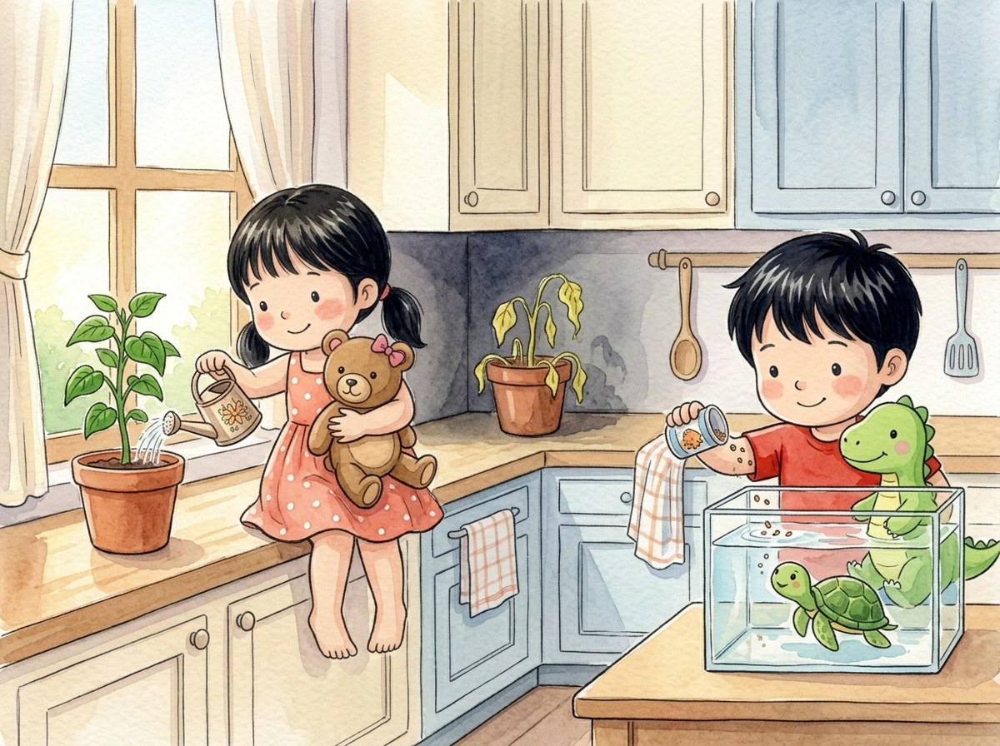

Kindergarten · Science · K-LS1-1
The little plant and the turtle
A story about what living things need to live.
Three new words
What all living things need to drink or get in order to live.
What lets us see; sunlight helps plants grow.
What animals and people eat to live.
Tap a picture to hear the word and what it means.
The story
Génesis has two little bean plants. Adrián has a turtle named Tortu.
One plant is by the window. The other one is in a dark corner.
Génesis gives both plants water every day.
After a week, the plant by the window is green and big.
The plant in the corner is pale and droopy. It gets no light!
Génesis moves it to the window. Little by little, it turns green again.
"Plants need water and light to live," says Génesis.
Tortu swims slowly toward Adrián. He is hungry!
Adrián gives him his food and changes his water.
"Tortu doesn't eat light like plants do," Adrián laughs. "He eats turtle food!"
Plants need water and light. Animals need water and food.
Questions
Listen to the question and tap the right picture.
-
Question A. Why was the plant in the corner pale?
The plant in the corner got no light, and plants need light to live.
-
Question B. What did Adrián give Tortu?
Adrián gave him his food and changed his water.
-
Question C. What do animals need to live?
Animals need water and food. Plants need water and light.